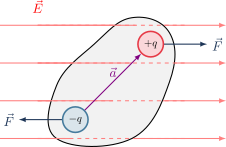
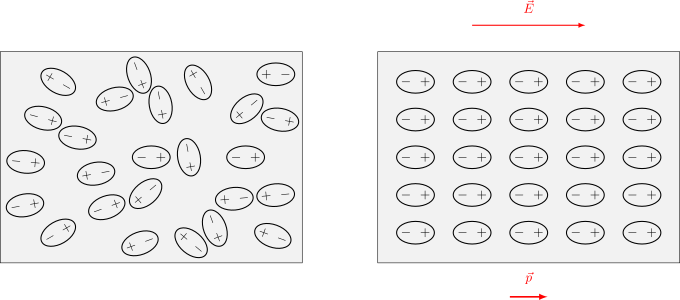

4.5 Dieléctricos#
Dipolos eléctricos y polarización#
Cuando un material dieléctrico se somete a un campo eléctrico, los momentos dipolares en su interior experimentan un torque.
{kind=link}

El torque neto \(\vec{\tau}_{\text{neto}}\) sobre un dipolo eléctrico se define a partir de las fuerzas sobre sus cargas:
donde \(\vec{p} = q\vec{a}\) es el momento dipolar. Las dimensiones de \(\vec{p}\) corresponden a carga por longitud.
Al colocar el material en presencia de un campo eléctrico, los dipolos se alinean.
{kind=link}

Para describir este fenómeno a nivel macroscópico, definimos el vector polarización \(\vec{P}\) como el momento dipolar por unidad de volumen \(\mathcal{V}\):
Sus dimensiones son carga por unidad de área. Producto de esta alineación, el material queda con un borde con carga positiva y el otro con carga negativa. La carga de polarización \(Q_p\) neta a través de una superficie se expresa como:
Aplicando la ley de Gauss considerando la carga libre \(Q\) y la carga de polarización \(Q_p\):
El término entre paréntesis se define como el desplazamiento eléctrico \(\vec{D}\).
Dieléctricos lineales y desplazamiento eléctrico#
Si el material dieléctrico es lineal, la polarización es proporcional al campo eléctrico mediante la susceptibilidad eléctrica \(\chi\):
Sustituyendo esto en el desplazamiento eléctrico, obtenemos:
Definimos la permitividad del material como \(\epsilon = \epsilon_0 + \chi\), cumpliendo que \(\epsilon \ge \epsilon_0\). A la razón geométrica entre ambas permitividades se le denomina constante dieléctrica \(K\):
Preguntas de Análisis#
Show code cell source
from IPython.display import display, HTML
quiz_dielectricos_html = """
<style>
.fisi-quiz-container {
border: 1px solid #e0e0e0;
padding: 15px;
margin-bottom: 25px;
border-radius: 8px;
background-color: #f8f9fa;
font-family: -apple-system, BlinkMacSystemFont, "Segoe UI", Roboto, Arial, sans-serif;
}
.fisi-question {
font-weight: 600;
margin-bottom: 15px;
color: #2c3e50;
}
.fisi-option {
margin-bottom: 10px;
display: flex;
align-items: flex-start;
cursor: pointer;
}
.fisi-option input {
margin-top: 4px;
margin-right: 10px;
}
.fisi-check-btn {
background-color: #f73bc5;
color: white;
border: none;
padding: 8px 20px;
border-radius: 4px;
cursor: pointer;
font-size: 14px;
margin-top: 10px;
font-weight: 500;
}
.fisi-check-btn:hover { background-color: #ab2988; }
.fisi-feedback {
margin-top: 15px;
padding: 12px;
border-radius: 6px;
display: none;
font-size: 0.95em;
}
</style>
<script>
if (typeof window.checkFisiQuiz === 'undefined') {
window.checkFisiQuiz = function(radioName, feedbackId) {
var radios = document.getElementsByName(radioName);
var selected = null;
var feedbackDiv = document.getElementById(feedbackId);
for (var i = 0; i < radios.length; i++) {
if (radios[i].checked) {
selected = radios[i];
break;
}
}
feedbackDiv.style.display = 'block';
if (!selected) {
feedbackDiv.style.backgroundColor = '#fff3cd';
feedbackDiv.style.color = '#856404';
feedbackDiv.style.border = '1px solid #ffeeba';
feedbackDiv.innerHTML = '⚠️ Por favor, selecciona una opción.';
return;
}
var isCorrect = selected.getAttribute('data-correct') === 'true';
var msg = selected.getAttribute('data-fb');
if (isCorrect) {
feedbackDiv.style.backgroundColor = '#d4edda';
feedbackDiv.style.color = '#155724';
feedbackDiv.style.border = '1px solid #c3e6cb';
feedbackDiv.innerHTML = '✅ <strong>¡Correcto!</strong><br>' + msg;
} else {
feedbackDiv.style.backgroundColor = '#f8d7da';
feedbackDiv.style.color = '#721c24';
feedbackDiv.style.border = '1px solid #f5c6cb';
feedbackDiv.innerHTML = '❌ <strong>Incorrecto.</strong><br>' + msg;
}
};
}
</script>
<div class="fisi-quiz-container">
<div class="fisi-question">
1. Cuando un material dieléctrico se somete a un campo eléctrico, sus dipolos internos se alinean. A nivel macroscópico, ¿qué describe físicamente el vector de polarización (P)?
</div>
<label class="fisi-option">
<input type="radio" name="qdielec1" value="a" data-fb="Incorrecto. El torque es la causa mecánica de la rotación (τ = p × E), pero el vector de polarización describe el resultado de esa alineación en el volumen.">
<span>Representa el torque total ejercido por el campo eléctrico externo sobre cada molécula individual.</span>
</label>
<label class="fisi-option">
<input type="radio" name="qdielec1" value="b" data-fb="Incorrecto. La polarización tiene dimensiones de carga por unidad de área, pero no describe flujo de cargas libres, sino el reacomodo de cargas ligadas.">
<span>Representa la densidad de carga libre neta que atraviesa una unidad de área del material.</span>
</label>
<label class="fisi-option">
<input type="radio" name="qdielec1" value="c" data-correct="true" data-fb="¡Exacto! El vector polarización (P) se define matemáticamente como la derivada del momento dipolar respecto al volumen (P = dp/dV). Es una medida de la densidad del momento dipolar eléctrico acumulado en un material.">
<span>Representa el momento dipolar eléctrico neto acumulado por cada unidad de volumen del material.</span>
</label>
<label class="fisi-option">
<input type="radio" name="qdielec1" value="d" data-fb="Incorrecto. La diferencia de potencial depende de la integral del campo y la distancia, no es la definición intrínseca de la polarización macroscópica.">
<span>Representa la diferencia de potencial generada entre los extremos del material, dividida por la constante dieléctrica.</span>
</label>
<button class="fisi-check-btn" onclick="checkFisiQuiz('qdielec1', 'feedback-dielec1')">Comprobar</button>
<div class="fisi-feedback" id="feedback-dielec1"></div>
</div>
<div class="fisi-quiz-container">
<div class="fisi-question">
2. Al aplicar la Ley de Gauss en un dieléctrico, se agrupa la permisividad y la polarización para definir el vector de desplazamiento eléctrico D = ε₀E + P. ¿Por qué resulta matemáticamente tan útil definir este nuevo vector en el estudio del electromagnetismo?
</div>
<label class="fisi-option">
<input type="radio" name="qdielec2" value="a" data-correct="true" data-fb="¡Correcto! En los materiales reales es muy difícil medir la 'carga de polarización' (Q_p) ligada a los átomos. Al reordenar la ecuación de Gauss usando el vector D, la integral de superficie de D queda igualada únicamente a la 'carga libre' (Q), la cual es fácilmente medible y controlable en un laboratorio.">
<span>Porque permite reescribir la Ley de Gauss de modo que el flujo dependa exclusivamente de la carga libre (Q), integrando matemáticamente el efecto de la carga de polarización (Q_p) dentro del propio vector D.</span>
</label>
<label class="fisi-option">
<input type="radio" name="qdielec2" value="b" data-fb="Incorrecto. El vector D no anula el campo E. De hecho, el campo eléctrico E resultante en el material suele ser menor que el campo externo, pero no es nulo salvo que sea un conductor perfecto.">
<span>Porque el vector D anula completamente el campo eléctrico interno (E = 0), simplificando el material dieléctrico a las ecuaciones de un conductor ideal.</span>
</label>
<label class="fisi-option">
<input type="radio" name="qdielec2" value="c" data-fb="Incorrecto. Es justamente lo opuesto: E es el campo que define las fuerzas eléctricas reales y la diferencia de potencial medible con un voltímetro; D es una construcción matemática útil.">
<span>Porque este vector de desplazamiento D es el único componente eléctrico que puede ser medido directamente mediante un voltímetro convencional.</span>
</label>
<label class="fisi-option">
<input type="radio" name="qdielec2" value="d" data-fb="Incorrecto. El flujo depende de la carga encerrada. Si hay carga libre en el interior, el flujo del vector D no será cero.">
<span>Porque garantiza geométricamente que el flujo eléctrico neto a través de cualquier superficie gaussiana cerrada sea siempre igual a cero.</span>
</label>
<button class="fisi-check-btn" onclick="checkFisiQuiz('qdielec2', 'feedback-dielec2')">Comprobar</button>
<div class="fisi-feedback" id="feedback-dielec2"></div>
</div>
<div class="fisi-quiz-container">
<div class="fisi-question">
3. Para un dieléctrico lineal, la constante dieléctrica se define como K = ε / ε₀. Sabiendo que, por definición física, K ≥ 1 para cualquier material, ¿qué implicancia directa tiene esto respecto a la permitividad del material?
</div>
<label class="fisi-option">
<input type="radio" name="qdielec3" value="a" data-fb="Incorrecto. Matemáticamente K = ε / ε₀ ≥ 1 implica que ε ≥ ε₀. La permitividad del material es mayor, no menor, que la del vacío.">
<span>Implica que la permitividad del material (ε) siempre será menor que la del vacío, debilitando fuertemente el almacenamiento de carga.</span>
</label>
<label class="fisi-option">
<input type="radio" name="qdielec3" value="b" data-fb="Incorrecto. Dado que ε = ε₀ + χ, para que ε ≥ ε₀ se requiere necesariamente que la susceptibilidad (χ) sea un valor positivo o cero.">
<span>Implica que la susceptibilidad eléctrica (χ) del dieléctrico es siempre negativa, oponiéndose permanentemente a la presencia del campo E.</span>
</label>
<label class="fisi-option">
<input type="radio" name="qdielec3" value="c" data-correct="true" data-fb="¡Exacto! Como ε = ε₀ + χ, y sabiendo que la susceptibilidad eléctrica (χ) de un dieléctrico responde favorablemente al campo (es positiva), la permitividad total del material (ε) siempre será igual o mayor a la permitividad base del vacío (ε₀). El valor 1 corresponde al vacío puro.">
<span>Implica que la permitividad total del material (ε), debido a la respuesta de su susceptibilidad (χ), siempre será igual o mayor que la permitividad propia del vacío (ε₀).</span>
</label>
<label class="fisi-option">
<input type="radio" name="qdielec3" value="d" data-fb="Incorrecto. La constante K es una razón intrínseca del material. No establece un valor mínimo de voltaje o campo externo para que comience la polarización (en dieléctricos lineales la respuesta ocurre desde el principio).">
<span>Implica que un material dieléctrico lineal solo puede polarizarse de forma constante si el campo eléctrico externo supera la magnitud de 1 V/m.</span>
</label>
<button class="fisi-check-btn" onclick="checkFisiQuiz('qdielec3', 'feedback-dielec3')">Comprobar</button>
<div class="fisi-feedback" id="feedback-dielec3"></div>
</div>
"""
display(HTML(quiz_dielectricos_html))